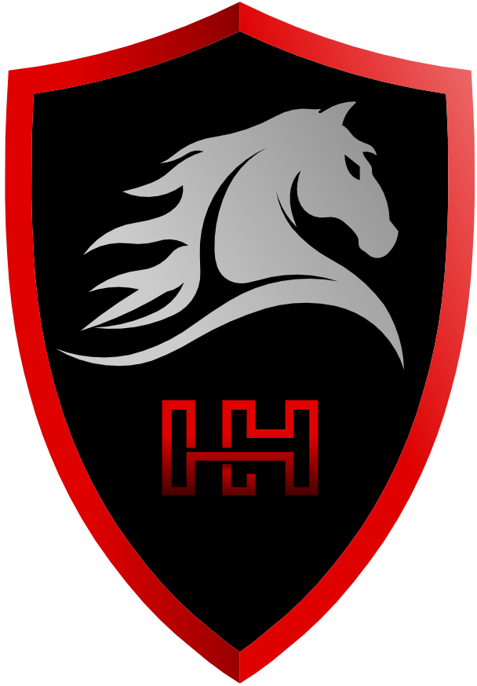
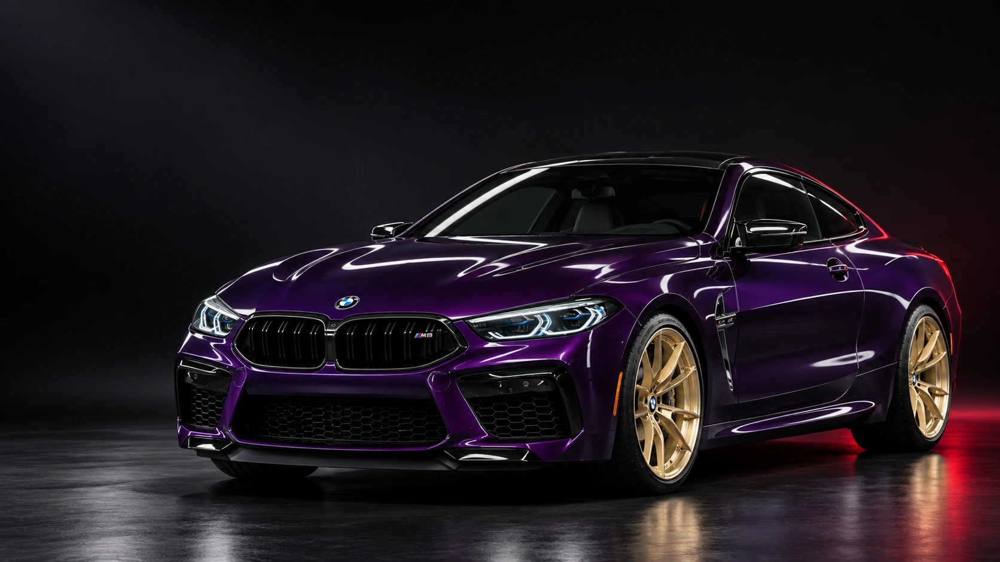

Сначала — понять задачу
Подберём уход под состояние автомобиля: от регулярной очистки до восстановления внешнего вида.


Защита, восстановление и уход.
Для тех, кто чувствует разницу.
Каждая поверхность требует своего подхода.
Выберите, о чём позаботимся мы.
Прозрачная защитная плёнка помогает уберечь лакокрасочное покрытие от дорожного песка, мелких сколов и повседневных воздействий.
Добавить к подборуАвтомобили в кадре Iron Horse.
Свет, цвет и внимание к деталям.
Выберите то, что важно сейчас.
Остальное обсудим лично.
Детейлинг начинается с внимания к вашему автомобилю и вашим ожиданиям.
Подберём уход под состояние автомобиля: от регулярной очистки до восстановления внешнего вида.
Уточним подходящие услуги, материалы, сроки и стоимость до записи на работы.
Спросите специалиста, как ухаживать за поверхностями после выбранной процедуры.
Выберите свой Iron Horse.
Начнём с разговора о вашем автомобиле.
Плёнка создаёт физический защитный слой на поверхности кузова. Керамическое покрытие помогает упростить уход и поддерживать блеск. Это разные задачи: подходящее решение зависит от эксплуатации автомобиля и вашего запроса. Обсудите сочетание процедур со специалистом.
Напишите в выбранный филиал: укажите марку, модель, желаемые работы и при возможности приложите фотографии. Для окончательной оценки может потребоваться осмотр автомобиля.
Да, запрос на защиту нового автомобиля можно обсудить в WhatsApp. Специалист уточнит состояние покрытия, подходящие зоны защиты и последовательность работ.
Сначала согласуйте время и состав работ с филиалом. Для химчистки салона заранее уберите личные вещи. Остальные рекомендации зависят от выбранной процедуры — их уточнит специалист.